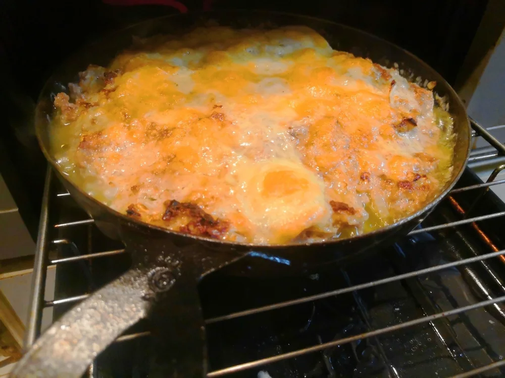
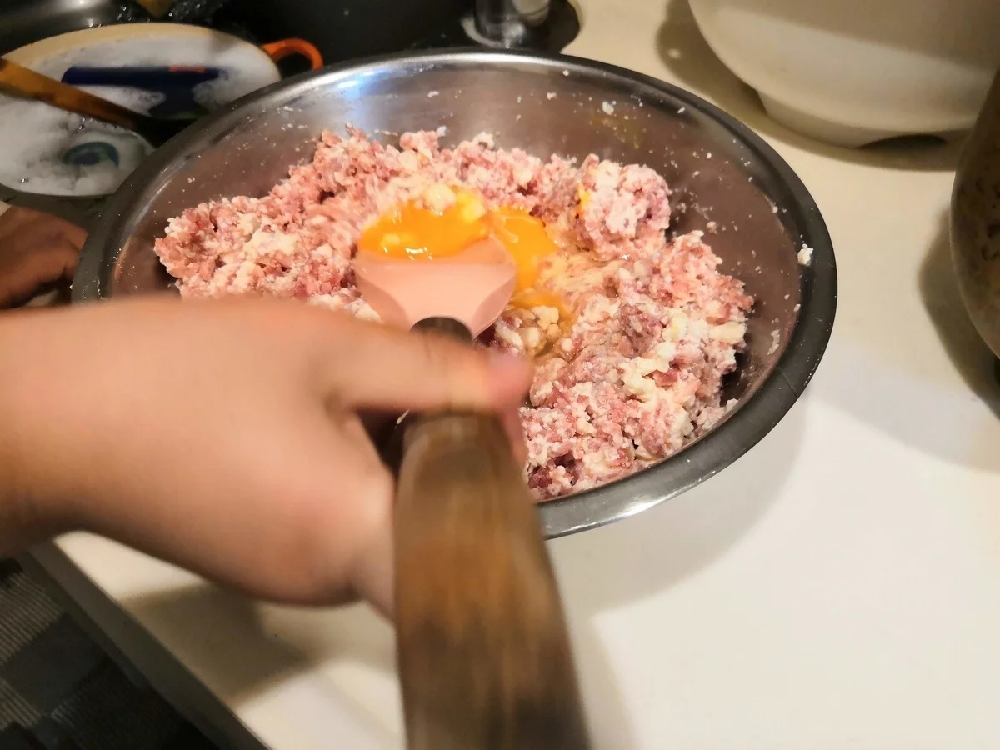

肉・豆腐のおかず
おから豆腐チキンナゲット
粗く刻んだ鶏胸肉に、豆腐、卵、おからパウダーを混ぜて揚げるナゲットです。私が公開してきたおから料理の中でも、揚げ物も適度に楽しみながら、食べ
合いびき肉におからパウダーと豆腐を加えて作り、チーズをのせて魚焼きグリルで香ばしく焼くハンバーグです。肉だねはまとめて作り、その一部を小さな鉄製フライパンに入れて焼きます。


合いびき肉1kgは、肉だね全量の材料です。グリルで焼いたのは、そのうち約1/3です。「1kgの肉を10分で焼ける」という意味ではありません。
チーズ50gは、元記事で肉だねの約1/3を焼いた1回分の量です。残りの肉だねは別の料理に使っているため、全量をハンバーグにする場合のチーズの量は元記事にありません。
器の直径や肉だねの厚みも、数値の指定がありません。焼き時間を一律に決めず、中心まで火が通ったことを確かめます。
チーズに焼き色がついても、それだけで肉の中心まで加熱できたとは判断しないでください。
私は公開記事で、柔らかいハンバーグと香ばしく焼けたチーズの組み合わせを紹介しています。ケチャップを添えて食べるほか、ハンバーガーにする使い方もあります。
元記事では、この肉だねを丸めて焼けばミートボールになると紹介しています。ハンバーグ用に取り分けた残りを使う場合は、同じ配合の肉だねを丸めて焼き、中心まで十分に火を通します。こちらには、グリルで焼くハンバーグの5分、追加5分という時間を当てはめません。
たれを加えない段階でも、塩とコショウ、玉ねぎが入った肉団子です。別の味へ展開したいときも、まずはこの基本の味を確かめてください。形を変えるだけで、切り分ける主菜から、弁当に詰めやすいおかずへつなげられます。
加熱時間は作った時の目安です。容器や調理器具によって仕上がりは変わります。中心まで火が通っていることを確認してください。
おからパウダー豆腐チーズハンバーグの材料・作り方（50kgdiet.com） →
このページは書籍の改訂原稿をもとに掲載しています。元記事は過去の記録のため、材料や表現が異なる場合があります。